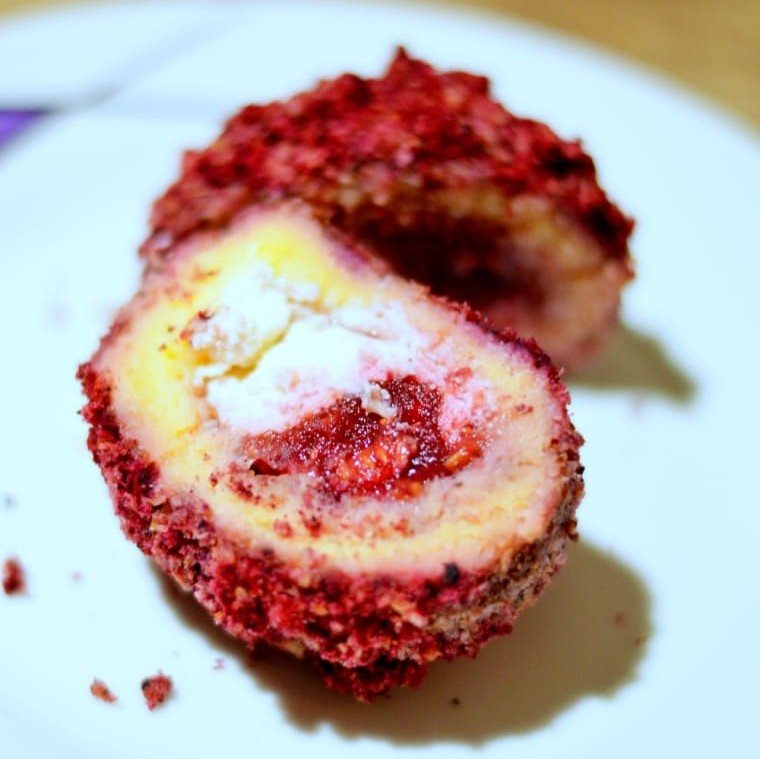
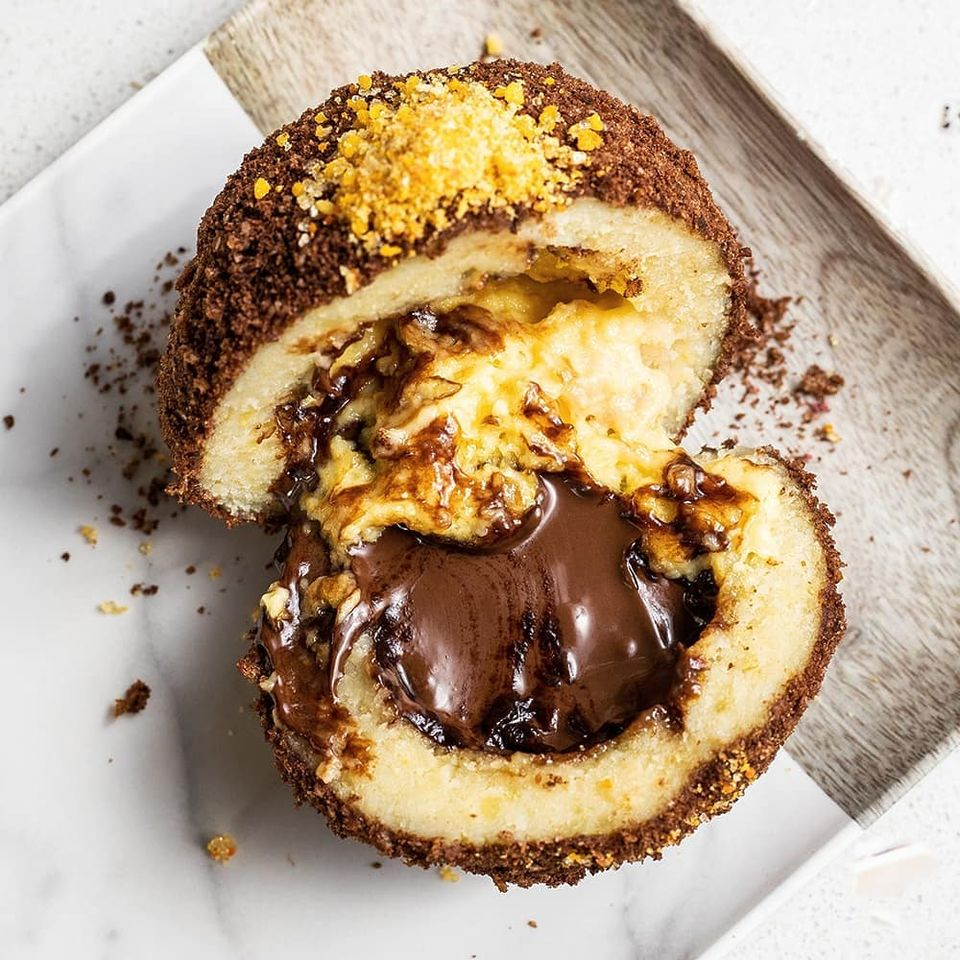
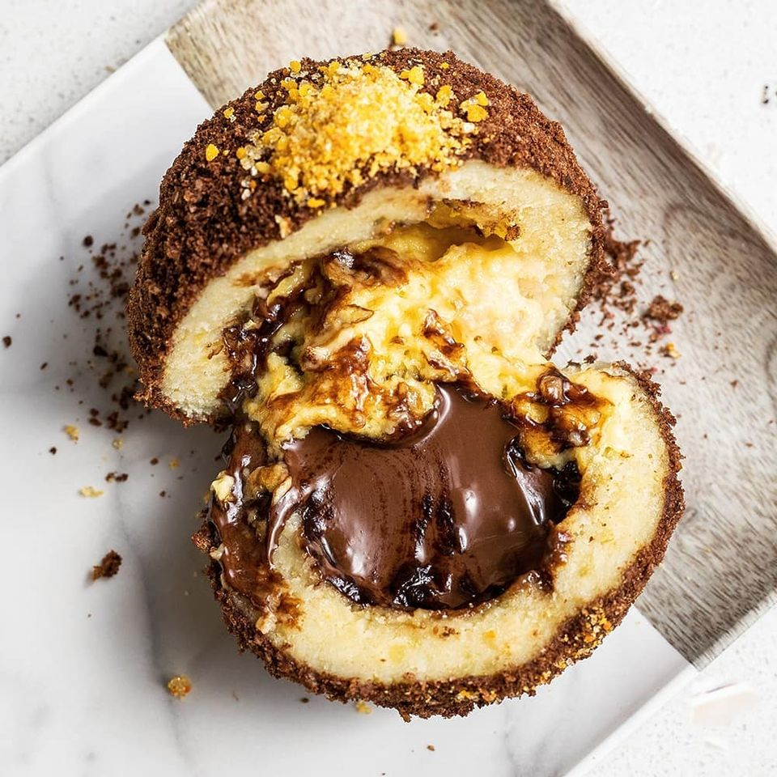

Dobrodošli na početnu stranu!

 

Zatvorite oči i pokušajte zamisliti ukus detinjstva. Prizovite miris bakine kuhinje. Sigurno vam dolaze slike kolača, topljena čokolada, mak, bademi... A knedle? Sigurno su tu i meke, sočne krompirove knedle punjene sezonskim voćem i umotane zaprženim mrvicama. Upravo takav ukus domaćih bakinih knedli možete probati kod nas. Neka se bake ne ljute, ali ove knedle su ipak za mrvicu bolje. Rađene su po tradicionalnoj recepturi, ali su dodatno obogaćene najmaštovitijim punjenjima i dodacima koje možete zamisliti.
Kod nas možete pronaći sve ukuse i kombinacije koje vam padnu na pamet. Od slanih do slatkih. Sa šljivama, jabukama, orasima, pistaćima, nutelom, tamnom čokoladom, belom čokoladom, četiri vrste sira, pršutom, malinama, a svi posipi rađeni su prirodno, bez dodataka i bojila. Ne bismo da se hvalimo, ali izgled je savršen. A ukus? Božanstven.